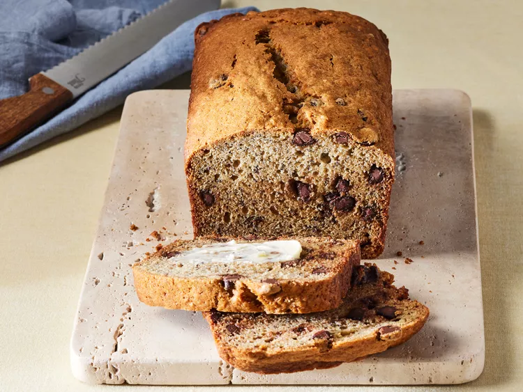

Banana Chocolate Chip Bread

Description
Enjoy this chocolate chip banana bread for breakfast, as a snack, or for dessert. It's quick, easy, and the perfect way to use up extra bananas!
Ingredients
- Flour
- Leaveners
- Salt
- Bananas
- Milk
- Cinnamon
- Sugar
- Eggs
- Chocolate chips
Steps
- Mix the dry ingredients in one bowl; the bananas, milk, and cinnamon in another bowl; and beat the butter and sugar in a third bowl, adding the eggs one at a time.
- Stir the banana mixture into the butter mixture. Mix in the flour mixture. Fold in the chocolate chips.
- Pour the batter into a prepared loaf pan and bake in the preheated oven until a toothpick comes out clean.